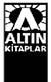

YAYIN HAKLARI
© CELİL OKER
ALTIN KİTAPLAR YAYINEVİ
VE TİCARET AŞ
KAPAK TASARIMI
gülhan taşlı
Bu kitabIn her türlü yayIn haklarI
Fikir ve Sanat Eserleri YasasI gereğince
ALTIN KiTAPLAR YAYINEVi ve TiCARET aş’ye aittir.
ISBN 978 – 975 – 21 - 1690 - 0
ALTIN KİTAPLAR YAYINEVİ
Göztepe Mah. Kaz›m Karabekir Cad.
No: 32 Mahmutbey - Ba€c›lar / ‹stanbul
Yayınevi Sertifika No: 10766
Tel: 0.212.446 38 88 pbx
Faks: 0.212.446 38 90
http://www.altinkitaplar.com.tr
